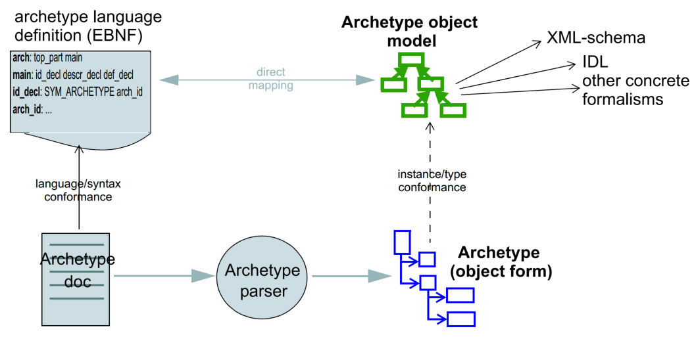

Appendix
Acknowledgements
Primary Author
-
Thomas Beale, Ars Semantica, UK
Supporters
The work reported in this paper has been funded by the following organisations:
-
UCL (University College London) - Centre for Health Informatics and Multiprofessional Education (CHIME);
-
Ocean Informatics.
Special thanks to Prof David Ingram, founding Director of CHIME, UCL, who provided a vision and collegial working environment ever since the days of GEHR (1992).
Trademarks
-
'openEHR' is a trademark of the openEHR Foundation
-
'Java' is a registered trademark of Oracle Corporation
-
'Microsoft' is a trademark of the Microsoft Corporation
Conformance
Conformance of a data or software artifact to an openEHR specification is determined by a formal test of that artifact against the relevant openEHR Implementation Technology Specification(s) (ITSs), such as an IDL interface or an XML-schema. Since ITSs are formal derivations from underlying models, ITS conformance indicates model conformance.
Background
What is an Archetype?
Archetypes are constraint-based models of domain entities, or what some might call "structured business rules". Each archetype describes configurations of data instances whose classes are described in a reference model; the instance configurations are considered to be valid exemplars of a particular domain concept. Thus, in medicine, an archetype might be designed to constrain configurations of instances of a simple node/arc information model, that express a "microbiology test result" or a "physical examination". Archetypes can be composed, specialised, and templated for local use. The archetype concept has been described in detail by [1], [2]. Most of the detailed formal semantics are described in the openEHR Archetype Definition Language. The openEHR archetype framework is described in the openEHR Archetypes Technical Overview.
Context
The object model described in this document relates to linguistic forms of archetypes as shown in the figure below. The model (upper right in the figure) is the object-oriented semantic equivalent of the ADL the Archetype Definition Language BNF language definition, and, by extension, any formal transformation of it. Instances of the model (lower right on the figure) are themselves archetypes, and correspond one-to-one with archetype documents expressed in ADL or a related language.

Tools
Various tools exist for creating and processing archetypes. The ADL Workbench is a reference compiler, visualiser and editor. The openEHR tools can be downloaded from the website . Source projects can be found at the openEHR Github project.
Changes from Previous Versions
Version 0.6 to 2.0
As part of the changes carried out to ADL version 1.3, the archetype object model specified here is revised, also to version 2.0, to indicate that ADL and the AOM can be regarded as 100% synchronised specifications.
-
added a new attribute
adl_version : Stringto theARCHETYPEclass; -
changed name of
ARCHETYPE.concept_codeattribute toconcept.
Amendment Record
| Issue | Details | Raiser, Implementer | Completed |
|---|---|---|---|
AM Release 2.4.0 |
|||
SPECPR-378. Fix typos in AOM 1.4. |
P Pazos |
||
AM Release 2.3.0 |
|||
1.4.6 |
SPECAM-84. Fix typos in AOM, ADL 1.4. |
R Kavanagh |
03 Apr 2023 |
SPECAM-82. Upgrade AOM1.4 model to use BASE, and to have regular package structure. Correct a UML error to move the invariant on |
T Beale |
14 Feb 2023 |
|
1.4.5 |
SPECAM-69. Support negative durations. See [_c_duration_class]. (see also SPECRM-96). |
P Bos, |
09 Sep 2020 |
1.4.4 |
SPECPUB-7. Convert citations to bibtex form. |
T Beale |
15 Dec 2019 |
AM Release 2.1.0 |
|||
1.4.3 |
SPECAM-42Adjust references to BASE packages |
T Beale |
22 Sep 2017 |
AM Release 2.0.6 |
|||
1.4.2 |
Add Appendix C, containing UML diagrams for RM dependencies. |
D Boscá |
18 May 2016 |
SPECBASE-4. Change order of type parameters in |
D Boscá |
13 Apr 2016 |
|
Release 1.0.2 |
|||
1.0.2 |
SPEC-257. Correct minor typos and clarify text. Correct reversed definitions of |
C Ma, |
20 Nov 2008 |
SPEC-251. Allow both pattern and interval constraint on Duration in Archetypes. Add pattern attribute to |
S Heard |
||
Release 1.0.1 |
|||
1.0.1 |
D Lloyd, |
20 Mar 2007 |
|
SPEC-216: Allow mixture of W, D etc in ISO8601 Duration (deviation from standard). |
S Heard |
||
SPEC-219: Use constants instead of literals to refer to terminology in RM. |
R Chen |
||
SPEC-232. Relax validity invariant on |
R Chen |
||
SPEC-233: Define semantics for |
K Atalag |
||
SPEC-234: Correct functional semantics of AOM constraint model package. |
T Beale |
||
SPEC-245: Allow term bindings to paths in archetypes. |
S Heard |
||
Release 1.0 |
|||
1.0 |
T Beale |
10 Nov 2005 |
|
Release 0.96 |
|||
0.6 |
SPEC-134. Correct numerous documentation errors in AOM. Including cut and paste error in |
D Lloyd |
20 Jun 2005 |
SPEC-142. Update ADL grammar to support assumed values. Changed |
S Heard, |
||
SPEC-146: Alterations to am.archetype.description from CEN MetaKnow |
D Kalra |
||
SPEC-138. Archetype-level assertions. |
T Beale |
||
SPEC-157. Fix names of |
T Beale |
||
Release 0.95 |
|||
0.5.1 |
Corrected documentation error - return type of |
D Lloyd |
20 Jan 2005 |
0.5 |
SPEC-110. Update ADL document and create AOM document.
Initial Writing. Taken from ADL document 1.2draft B. |
T Beale |
10 Nov 2004 |
-
[1] T. Beale, “Archetypes: Constraint-based Domain Models for Future-proof Information Systems.” [Online]. Available: https://www.openehr.org/publications/archetypes/archetypes_beale_web_2000.pdf
-
[2] T. Beale, “Archetypes: Constraint-based Domain Models for Future-proof Information Systems.,” in Eleventh OOPSLA Workshop on Behavioral Semantics: Serving the Customer, K. Baclawski and H. Kilov, Eds., Northeastern University, Boston, Nov. 2002, pp. 16–32. [Online]. Available: https://www.openehr.org/publications/archetypes/archetypes_beale_oopsla_2002.pdf